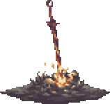

.png)
|
|
.png)
|
Dark Souls II é um jogo do género RPG de ação produzido pela empresa japonesa FromSoftware e o
terceiro da série Souls. Depois de alguns adiamentos, foi lançado pela Bandai Namco Games entre março e
abril de 2014 para Microsoft Windows, PlayStation 3 e Xbox 360.
Dark Souls II foi anunciado durante os Spike Video Game Awards em dezembro de 2012. Hidetaka Miyazaki,
que foi director dos dois jogos anteriores da série, Demon's Souls e Dark Souls, serviu como supervisor,
enquanto que a direcção ficou a cargo de Tomohiro Shibuya e Yui Tanimura. O game se passa dentro do
mundo fictício de Drangleic, existindo menções e complementos ao enredo do game anterior, Dark Souls. O
jogo usa servidores dedicados para o multijogador, e usa dois modos: jogador vs. ambiente (PvE) e
jogador vs. jogador (PvP), para além de ter componentes cooperativos. Tal como em jogos anteriores da
série, Dark Souls II tem uma jogabilidade desafiadora, mas com gráficos mais poderosos e um sistema de
inteligência artificial mais avançado.
De acordo com o site de análises agregadas Metacritic, Dark Souls II recebeu “aclamação universal” por
parte da critica especializada, conseguindo a pontuação de 91/100 em todas as versões. Uma versão
actualizada, Dark Souls II: Scholar of the First Sin, foi lançada em abril de 2015. O título é uma
compilação do jogo original e de todo o conteúdo adicional lançado, para além de englobar uma versão
para PlayStation 4, Xbox One e Windows com gráficos melhorados, melhor capacidade do multijogador online
entre outras melhorias. A sequela, Dark Souls III, foi lançada entre março e abril de 2016.
